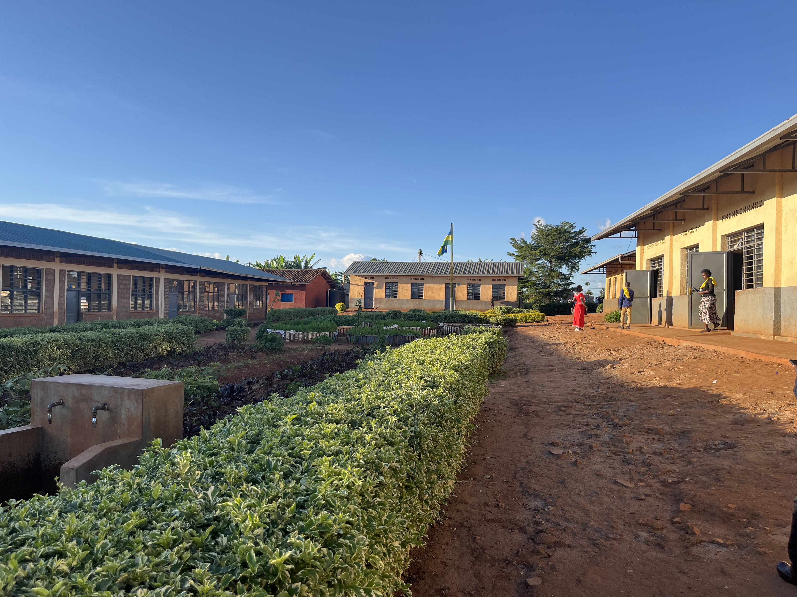
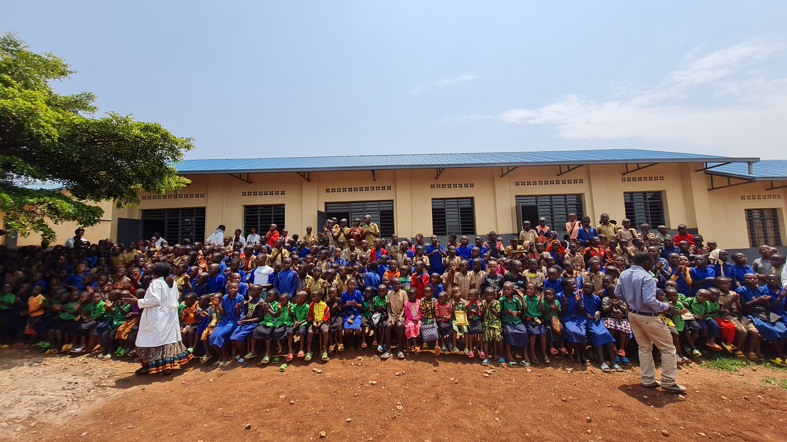

Améliorer les infrastructures
Participer à l’aménagement, à la rénovation et à l’équipement des espaces nécessaires à une vie scolaire de qualité.

Agir concrètement
Notre action se construit autour de projets simples, utiles et durables, définis en lien avec les besoins de l’école et de la communauté locale.
Participer à l’aménagement, à la rénovation et à l’équipement des espaces nécessaires à une vie scolaire de qualité.
Contribuer à l’achat de mobilier, de fournitures et de matériel pédagogique pour faciliter les apprentissages.
Être attentifs aux situations de fragilité et chercher des réponses adaptées pour que les difficultés matérielles ne deviennent pas un obstacle à la scolarité.
Créer des occasions de rencontre, de partage et de découverte entre les jeunes et les communautés partenaires.

Une démarche durable
Nous souhaitons accompagner des réalisations dont l’utilité peut être mesurée et dont l’entretien et l’appropriation locale sont pensés dès le départ.
Soutenir un projet →